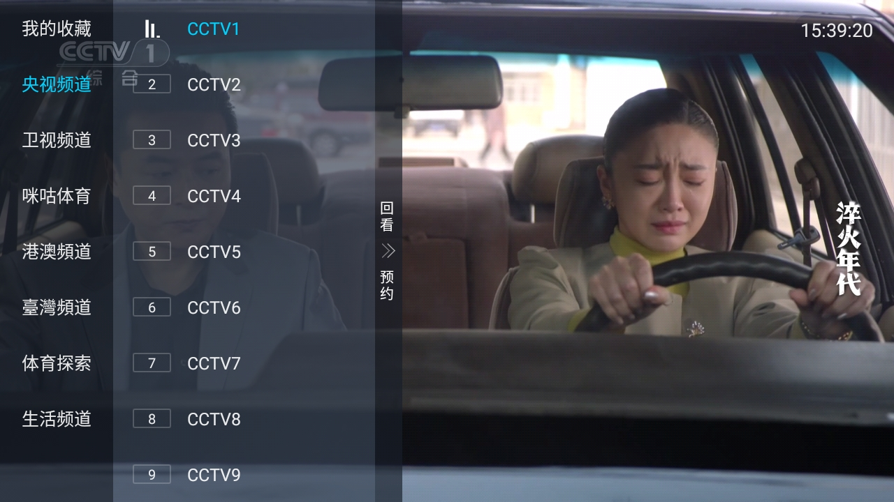

第一次用 LiveTV？五分钟从零到打开电视直播
完全不懂电视直播软件也没关系，这篇带你从下载安装到第一次换台，手把手走完最关键的五分钟。
这篇能带你从完全不懂到用起来——不需要任何基础，跟着做就行。
它到底是干嘛的
想象一下，你的智能电视本来要一个个点开视频应用、找直播专区、选台，中间还可能弹个广告打断。LiveTV 就是把这件事缩到最短的那个按钮：打开就是一堆电视频道，遥控器确认一下直接开播。
你可以把它理解成传统电视的"数字版遥控器"——传统遥控器是按数字键切台，它是在屏幕上弹出一个列表让你选，本质是一件事，只是换了个更适合智能电视的壳。想了解更多可以去LiveTV官网看看它的完整介绍和频道覆盖范围。
五分钟上手
从拿到安装包到第一次看成节目，五步走。
第一步：找安装包
打开电脑或手机的浏览器，从LiveTV下载入口拿到安装包。如果你是第一次接触这类东西，别担心"APK"这个词——你只需要知道它是安卓系统的安装文件，就像电脑上的 .exe 一样，下载完直接点就行。
第二步：装到电视上
智能电视一般都能通过几种方式安装外部应用：最常见的是 U 盘插电视的 USB 口，在电视的文件管理器里找到刚才下载的文件点开；有的电视支持手机推装，在手机上点一下就推过去了。具体走哪条路取决于你家电视的品牌和型号，电视自带的说明书或官网支持页一般都有这一步的图文教程。
第三步：打开应用
第一次打开时电视可能会弹个权限请求，比如"是否允许访问存储空间"，选允许就行——直播应用需要读取频道列表文件，这个权限是正常的。
第四步：呼出频道列表
打开后你会看到一个频道正在播放画面。按一下遥控器的确认键（通常是中间那个 OK 键），画面上会弹出频道列表——左边是一列分类（央视频道、卫视频道、体育之类），右边是当前分类下的频道清单，每个台前面带个编号。

第五步：选台播放
遥控器方向键左右切分类，上下选台，找到想看的按确认键——画面就切过去了。

好了，从下载到看成节目，五分钟绰绰有余。
上手后先玩这三个功能
能用之后别急着跑遍所有菜单——大部分功能你日常根本用不到。先把下面三个摸熟，日常体验就已经很顺手了。
收藏常用台
这是新手最该先碰的功能。你想，家里每天固定看那几个台：晚间新闻、体育频道、或者某个地方台，每次都在列表里翻多麻烦。把它们收进收藏栏，收藏栏永远排在分类列表的第一位——下次打开直接进收藏，点一下就开播。
操作也简单：在频道列表里选中某个台，按遥控器的菜单键（有的叫功能键），弹出的选项里找"收藏"，确认就行。多收藏几个，收藏栏自动按收藏顺序排列。
换播放线路
偶尔你会碰到某个台画面卡、声音时断时续，别慌——它不是让你退出重进。按遥控器左右方向键试试，它会在当前频道的多条播放线路之间切换。一般切个一两次就能找到流畅的那条。这个功能在看体育赛事的时候尤其重要，关键时刻卡壳了快速换线比什么都管用。更多关于播放线路切换的技巧和异常排查可以翻LiveTV文档。
搞清楚分类栏每一栏是什么
频道列表的左边那一竖栏就是分类，不同分类把几百个台组织得清清楚楚。大致扫一眼：央视频道是 CCTV 全序列，卫视频道是各省上星的卫视台，咪咕体育和体育探索是体育赛事相关的两个入口，港澳和台湾频道分别对应两个地区的台，生活频道放美食时尚这些。看懂这个结构之后，找任何台都不迷路。
小白的三个常见疑问
Q：为什么有的台黑屏或者一直转圈？
别担心，这不是你操作错了。直播频道背后的播放线路不是官方单一提供的，偶尔会因为线路维护或高峰拥堵出问题。先等几秒看看会不会自动恢复；不行就试试换播放线路（刚才说的左右方向键那个）；还不行就先切别的台，过一会再回来看看——大部分线路过几十分钟就自动恢复了。
Q：遥控器上哪些键有用，哪些不用管？
你日常只需要记三个键：确认键（呼出列表、选台播放）、方向键（上下左右移动）、菜单键（收藏、换源这些功能在里面）。其他乱七八糟的快捷键先别碰——它们确实有用但对你当下没用，碰了只会让你更晕。
Q：装完之后要不要更新？
能用就先别乱更。新版本可能带来新功能也可能带来新问题，等你用顺手了，过段时间再考虑更不更。尤其是给老人装的版本，稳定优先，等你在自己设备上试过没问题了再推给父母。
结语
LiveTV 本质上就是一个把"在智能电视上看直播"这件事做得足够简单的应用——不需要账号注册、不需要会员续费、界面就是你熟悉的那个"电视"。从能用到好用的分水岭就是收藏功能：把常看的几个台收进去，以后开电视 → 打开应用 → 点收藏栏里的第一个台，三步走完，跟用传统遥控器一样快。
想进阶的话，可以去翻一翻它的文档——里面有更细的频道分类说明、播放问题排查、甚至给父母装台的一套贴心建议。日常遇到某个台出问题想知道怎么调，或者想了解有没有什么隐藏的小功能，翻文档比自己瞎试高效得多。另外这套资料在GitHub和Gitee上都有同步的仓库，GitCode那边也留了一份备份，三个平台都能直接下载到对应的文件和说明。